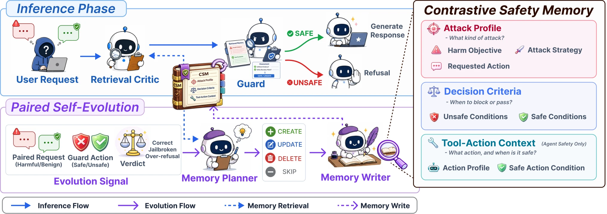

Abstract
Despite advances in safety alignment, large language models remain vulnerable to continuously evolving jailbreaks. Existing fine-tuned safety classifiers cannot adapt to these evolving attacks, while adaptive memory-based guardrails tend to over-refuse benign queries that resemble stored attacks. We propose Membrane, a self-evolving guardrail built on Contrastive Safety Memory (CSM): each cell pairs the conditions for blocking a harmful query with those for permitting a superficially similar benign request. Without retraining, Membrane evolves CSM by distilling each harmful interaction and its benign counterpart into a contrastive cell indexed by the underlying attack strategy, so that one cell generalizes across topical variants of the same mechanism. At inference, retrieved cells serve as grounding context for precise safety decisions. Across model-level safety on HarmBench and agent-level safety on AgentHarm, Membrane achieves the highest F1 on all six modern jailbreak attacks. Notably, benign refusal on AgentHarm stays at 7-14%, well below the 28-85% range of prior guards. Memory cells also retain 87-88% F1 under cross-attack transfer and remain stable under memory poisoning.
Method

- Contrastive Safety Memory. Each cell pairs the conditions for blocking a harmful query with those for permitting a superficially similar benign request. Cells are indexed by attack strategy, not by topic, so one cell covers topical variants of the same mechanism.
- Paired self-evolution. For each harmful query and its benign counterpart, a Memory Planner chooses to create, update, delete or skip a cell, a Memory Writer writes its content, and a non-LLM validator accepts or rejects the write. No retraining is involved.
- Inference. Vector retrieval over-retrieves candidate cells, a Retrieval Critic drops the ones that do not apply, and the Guard decides with the rest: two LLM calls per query.
Results
| HarmBench (model safety) | AgentHarm (agent safety) | |||
|---|---|---|---|---|
| Attack | Strongest other guard | Membrane | Strongest other guard | Membrane |
| PAIR | 85.3GuardReasoner | 89.5 | 62.2GuardAgent | 69.5 |
| PAP | 79.3GuardReasoner | 85.0 | 55.5ShieldAgent | 60.5 |
| TAP | 81.3RAD | 93.4 | 65.7AGrail | 81.5 |
| ReNeLLM | 92.6RAD | 97.8 | 67.0AGrail | 89.2 |
| FlipAttack | 92.7GuardReasoner | 98.1 | 70.3AGrail | 93.0 |
| AutoDAN-Turbo | 86.5GuardReasoner | 87.4 | 60.0AGrail | 70.5 |
F1 (%) per jailbreak attack, from Tables 1 and 2 of the paper. Membrane is averaged over three seeds.
- Membrane has the highest F1 on all six attacks on both benchmarks.
- Benign refusal on AgentHarm stays at 7–14%, compared with 28–53% for adaptive memory baselines and 73–85% for static guards.
- Memory cells retain 87–88% F1 under cross-attack transfer. On streams of attacks withheld from warmup, online self-evolution improves F1 on 11 of 12 streams, by up to 13.4 points on HarmBench and 32.2 on AgentHarm.
BibTeX
@inproceedings{choi2026membrane,
title = {Membrane: A Self-Evolving Contrastive Safety Memory for LLM Agent Defense},
author = {Choi, Minseok and Yang, Seungbin and Kim, Dongjin and Kim, Subin and Son, Jungmin and Lee, Yunseung and Choo, Jaegul and Kwak, Youngjun},
booktitle = {Proceedings of the 2026 Conference on Empirical Methods in Natural Language Processing},
year = {2026}
}